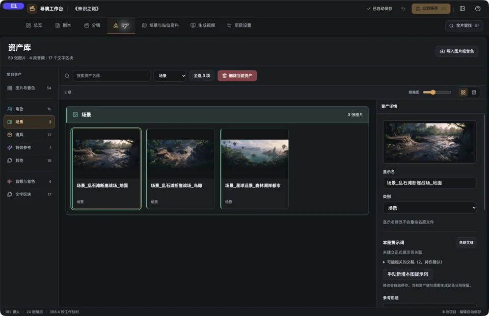
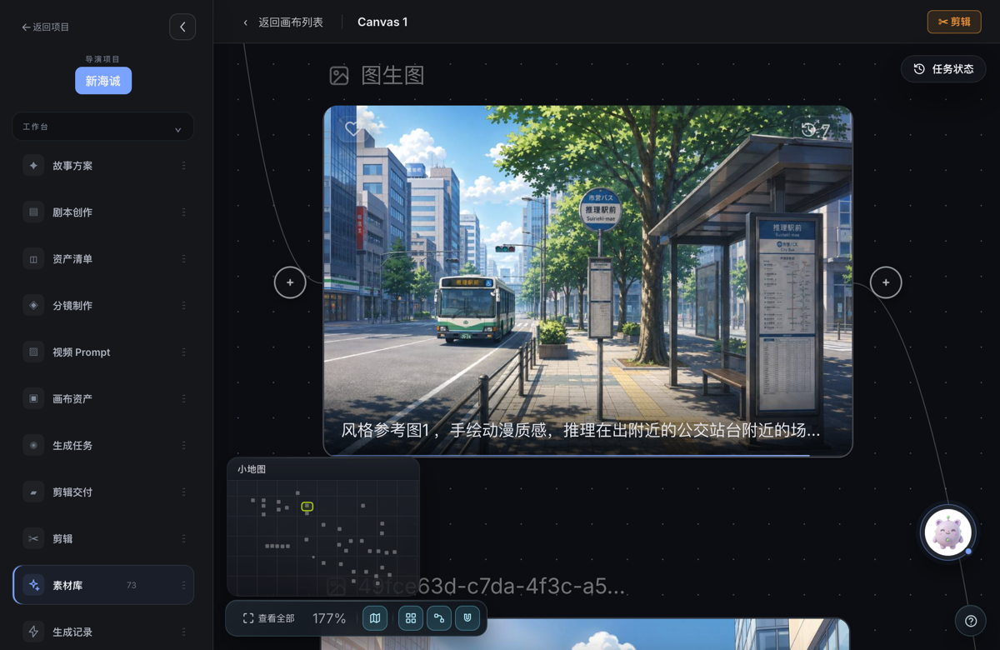
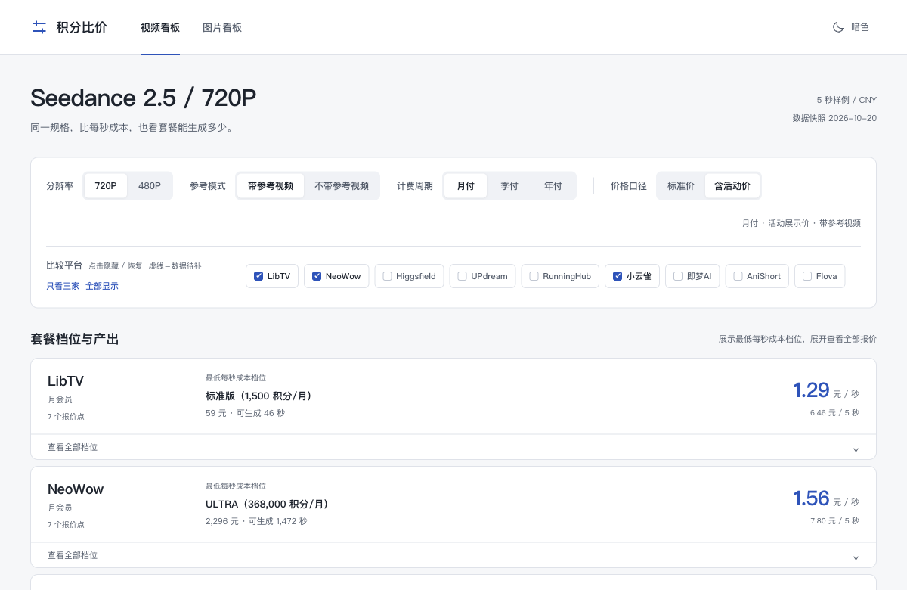
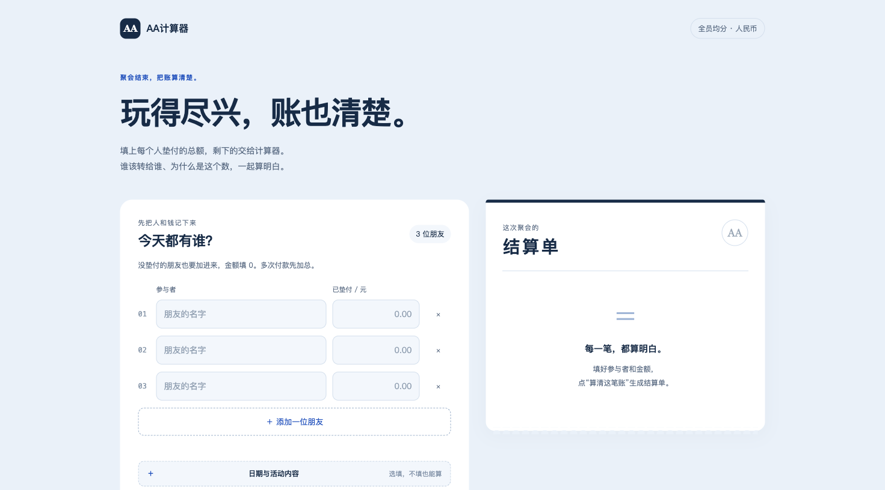

项目与应用
为影像制作造工具，也做一些日常的小应用。

AI 创作工具
AI 无限画布
以节点连线组织文生图、图生图与图生视频的创作链路。支持自定义模型 API、资产版本管理与多画布调度，所有数据保存在本机。
打开项目网页应用 · 新窗口打开
自配 API 密钥与模型参数，项目与生成数据保存在当前浏览器。

AI 创作工具
积分比价系统
把不同 AI 创作平台的会员套餐、积分与消耗换算成可比较的生成成本，查看同一规格下的价格与产出。
打开项目网页应用 · 新窗口打开
看板快照：2026.10.22，价格与活动以看板内标注日期为准。

日常实用工具
AA 计算器
记录每个人的垫付金额，算清谁该付给谁。聚餐、出游后快速均分费用，也能保存结算单和计算依据。
打开项目网页应用 · 新窗口打开
账单保存在当前浏览器，换设备或换网址不会自动同步。